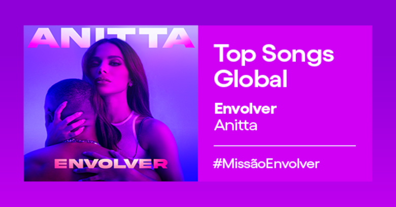

Bots são ruins? Especialista mostra como a ferramenta pode facilitar o trabalho e aumentar a produtividade
Professor de curso de tecnologia na Niu, Tony Ventura explica que uso de robôs vai muito além de spam e fake news; ao contrário do Twitter, Meta incentiva utilização do sistema em suas plataformas
Ver matéria completa

Caso de Anitta no Spotify: como as plataformas distinguem entre fãs e bots?
O anúncio de que o Spotify irá analisar se o primeiro lugar de Anitta no ranking Top 50 Global foi ou não manipulado levantou uma grande discussão sobre o "cabo-de-guerra" entre fãs e algoritmos.
Ver matéria completaBots para um País continental: a adaptação da linguagem para atender a todos
Robôs aprendem sotaques, regionalismos e expressões específicas para corresponder às variadas características dos brasileiros.
Ver matéria completaSaiba como adicionar um bot no seu servidor do Discord!
Bots do Discord, tecnicamente, são como "membros" de um servidor que automatizam as mais variadas tarefas que o usuário pode precisar. Alguns bots, por exemplo, realizam ações específicas a partir de uma mensagem/comando em um canal específico.
Ver matéria completaO Telegram melhorou os bots, a capacidade de criar suas próprias notificações e muito mais
Os bots do Telegram existem desde 2015 e, durante esse período, evoluíram significativamente. A atualização atual os levará ao próximo nível, pois os desenvolvedores agora podem criar uma variedade de interfaces em JavaScript.
Ver matéria completaSolana sofre 7ª queda em 2022 após bots invadirem a rede
Os bots de cunhagem de NFT na Solana contribuíram com mais de 4 milhões de transações por segundo, tirando o consenso dos validadores e travando a rede por cerca de sete horas.
Ver matéria completaFãs de Zack Snyder teriam usado robôs para garantir Oscar de filme favorito para Army Of The Dead
O site TheWrap divulgou hoje (12) uma matéria na qual indica que o prêmio de Filme Favorito dos Fãs do Oscar 2022 pode ter sido definido por programas automatizados.
Ver matéria completaProfissionais revelam se preferem treinar no DM ou com bots
Jogadores profissionais de Counter-Strike: Global Offensive revelaram se preferem jogar deathmatch ou com bots. Em um vídeo publicado pela Betway, diversos nomes consagrados do cenário competitivo opinaram sobre o que consideram as melhores maneiras de treinar.
Ver matéria completaSerasa: voice bots acumulam R$ 11 milhões em renegociação de dívidas
A Serasa implementou voice bots da BRbots em seu serviço de atendimento 0800. Em oito meses, o robô acumulou R$ 11 milhões em renegociação de dívidas. A título de comparação, em maio, quando o projeto começou, o valor era de R$ 600 mil
Ver matéria completa
Mais de 1 milhão de bots foram banidos do game Lost Ark
A Amazon Games anunciou que baniu mais de 1 milhão de “contas ilegítimas” acusadas de servir como bots em Lost Ark, mais novo lançamento da companhia. Com grande sucesso na Steam, Lost Ark se tornou um dos games mais jogados de todos os tempos na plataforma.
Ver matéria completaBots no e-commerce: saiba por que itens se esgotam rapidamente nas lojas virtuais
Há 1 semMuitas pessoas já tiveram a experiência de aguardar o lançamento de um produto e assim que a empresa libera a venda no site, rapidamente o estoque se esgota, isso pode ser provocado pelos bots, que acabam afetando a experiência do usuário.
Fonte: 33 GIGABot é capaz de identificar depressão em usuários do Twitter
Há 1 mêsPesquisadores das universidades de Brunel e de Leicester, ambas no Reino Unido, desenvolveram um novo algoritmo capaz de detectar depressão em usuários do Twitter com boa precisão.
Fonte: TecmundoPlaylists do Spotify são invadidas e "vandalizadas" por bots misteriosos
Há 3 mesesContas misteriosas no Spotify estão modificando playlists colaborativas sem autorização, relatam usuários e artistas da plataforma nas redes sociais.
Fonte: CanalTech